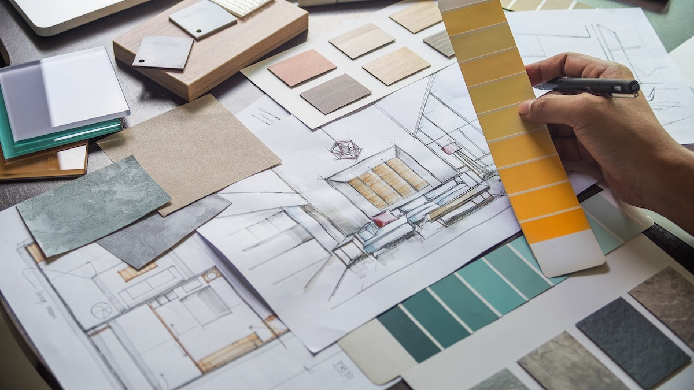

Sakti Nugraha
"Hello Folks" (folkstadden cat)
"Hello Folks" (folkstadden cat)
The skill takes a huge critical reasoning ability and train chronological ability both mentally and physically

This Skill takes my creativity and logical reasoneing even further, by adapting the brain to think differently while keeping my critical ability to work simultaneously
Narrative storywriting, be creative.